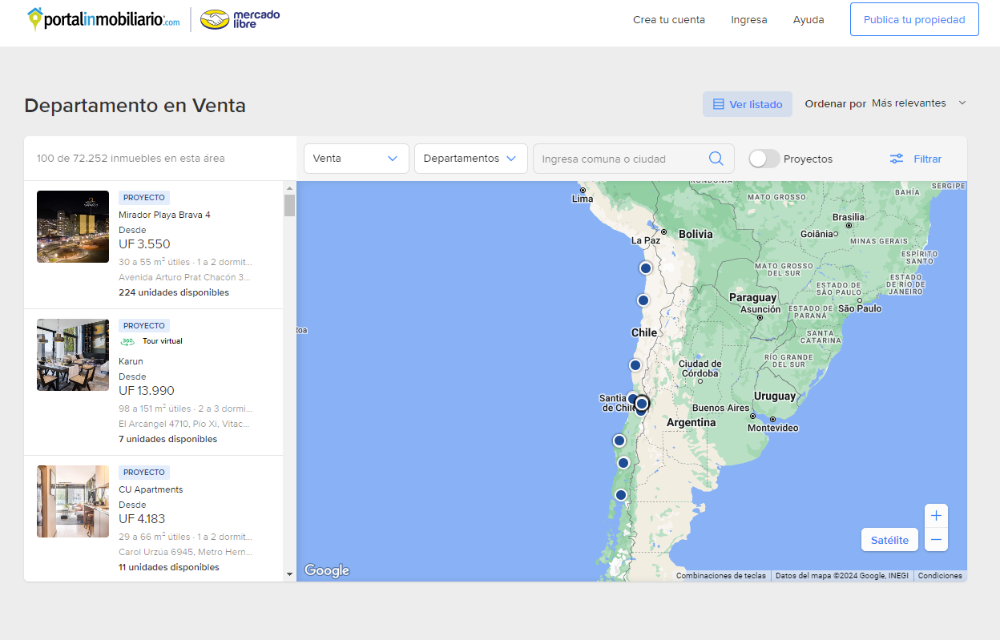
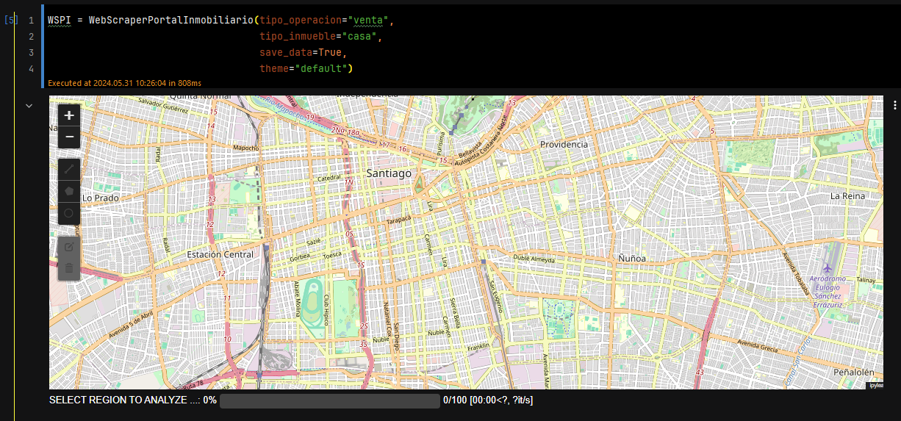
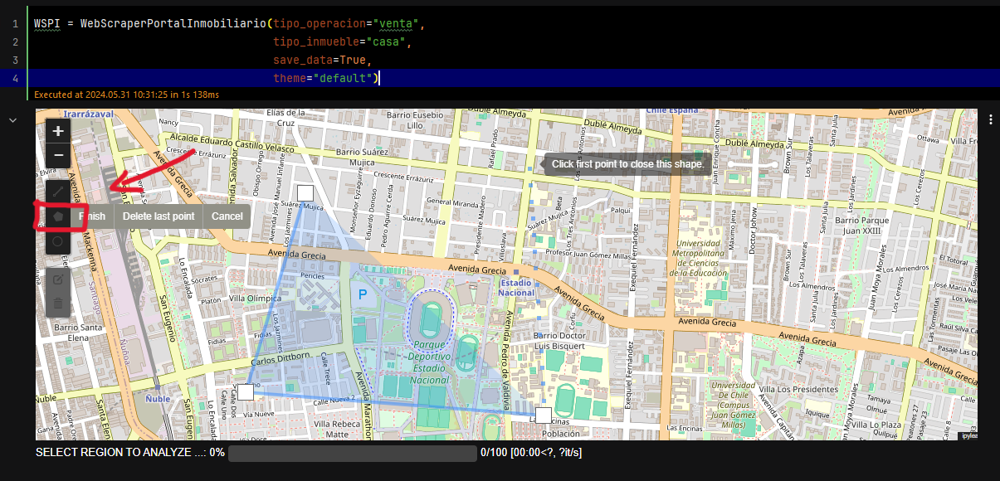
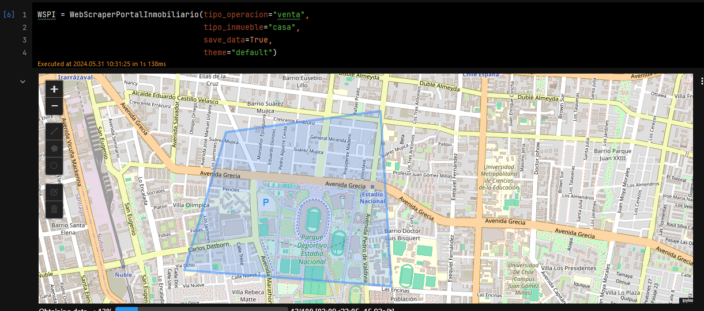
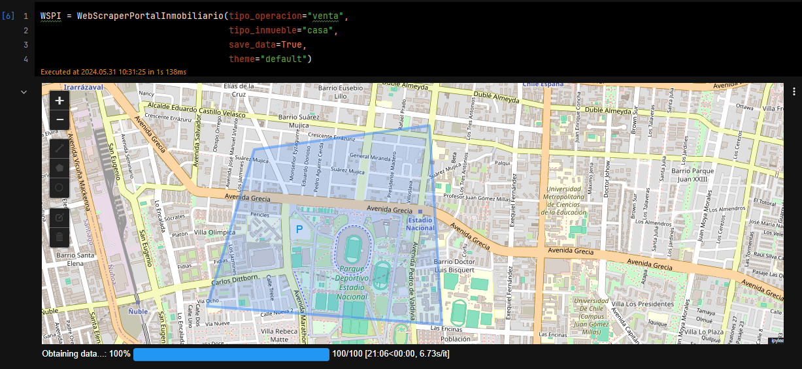
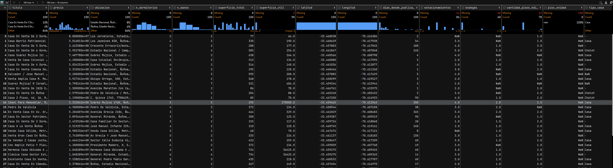

Web scraping
Portal Inmobiliario
¿Te ha pasado que mientras navegas por PortalInmobiliario.com encuentras un sector que te interesa, pero luego tienes que revisar una por una cada casa o proyecto para anotar y calcular las métricas que te importan? ¡Esa rutina tediosa es cosa del pasado! Con esta herramienta, simplemente elige un sector y obtén un dataframe con toda la información que necesitas. ¡Así de fácil!

Esta herramienta se presenta como una clase de fácil uso, requiere que se ejecute en un jupyter. Podemos importarla de la siguiente forma:
from webscrapper_portal_inmobiliario import WebScraperPortalInmobiliarioInicializamos la clase con la variable que nos interesan dentro de las cuales tenemos las siguientes opciones:
Tipo de operacion:
- Venta
- Arriendo
Tipo de inmueble:
- casa
- departamento
WSPI = WebScraperPortalInmobiliario(tipo_operacion="venta",
tipo_inmueble="casa",
save_data=True,
theme="default")

Elegimos utilizando la selección poligonal:

El único inconveniente es que el portal implementa medidas contra los webscrappers, como asignar aleatoriamente páginas con menos información o banear temporalmente la IP si se realizan demasiadas solicitudes. Para evitar estos problemas, nuestra herramienta incluye un periodo entre solicitudes bastante relajado, lo que ayuda a no saturar los servidores y garantiza una obtención de información amigable.


Los resultados se almacenan en la clase como df_results, permitiéndote realizar una infinidad de cálculos y obtener insights valiosos para tomar decisiones de inversión más informadas. Como proyecto futuro, planeo desarrollar una funcionalidad que calcule la mejor propiedad del sector utilizando métricas de tasa de capitalización, comparando los valores de arriendo y venta. ¡Así podrás identificar la opción más rentable con facilidad!

Puedes encontrar todo perfectamente documentado en mi Github.